Operating Documentation
Direction 5133330-3, Rev# 14
Signa EXCITE HD 3.0T Service Methods
Module Version 1.0, Version Date 5/3/07
Operating Documentation |
| Required Persons | Preliminary Reqs | Procedure | Finalization |
|---|---|---|---|
| 1 | Not Applicable | Not Applicable | Not Applicable |
DELTA is the development name of a new Cardiac MR Reviewing application developed as part of the Excite II program and in collaboration with Advanced Cardiovascular Imaging (62 East 88th Street, New York, NY). ReportCARD is the marketing name of the same application. The ReportCARD application is a cross-platform (i.e. Windows and Linux) reviewing and reporting application for magnetic resonance imaging (MRI) data, in particular cardiac MRI. ReportCARD 2.0 was developed as part of the Excite III program. This document primarily describes the product ReportCARD 2.0 installation. It also includes the installation instructions for the free reader version of ReportCARD 2.0.
| Item | Qty | Effectivity | Part# | Manufacturer | |
|---|---|---|---|---|---|
| ReportCARD 2.0 package (Catalog # M3033MG). See Section 4.1 | - | - | - | ||
| Condition | Reference | Effectivity |
|---|---|---|
The workstation needs to be installed on the same network zone as the scanners or workstations that it needs to connect to. It can be physically installed anywhere otherwise. A 100 Base-T network connection is required within 14 feet of the workstation. A longer distance is possible but the customer should provide a longer network cable. Two power plugs are required (monitor, workstation) | - | - |
ReportCARD 2.0 package (Catalog # M3033MG) contains:
HP8000 workstation (GEMS Part # 2368697-11). It includes:
The workstation itself
Power cables
Keyboard
Three-button mouse
One screen connector adapters (DVI-I to VGA)
NEC 18 inch flat screen (GEMS Part # M1000NT). It includes:
The screen itself
Video cables
One US power cable
Miscellaneous items (Collector Part # 2390365)
Delta Operator Documentation (GEMS Part # 2390456)
Network cable CAT5 patch cable, 14 ft (GEMS Part # 2215028-4)
ReportCARD 2.0 USB hardware key (GEMS Part # 2390369)
International kit (keyboards and power cables/adapters)
Delta Software items (Collector Part # 2390367)
CTT Linux 2.1.4 Operating System Installation CD-ROM (GEMS Part # 2385091)
ReportCARD 2.0 installation CD-ROM (GEMS Part # 2390366)
Reference Documents:
N/A
Predecessor Documents:
DELTA Datasheet by Sylvain Milet/MR Marketing
DELTA SRS by Andrew Wentland
DELTA Design Document by Andrew Wentland
Operator Documentation by Cindy Comeau
Successor Documents:
N/A
The installation instructions below are a summary. If you feel comfortable using Linux or installing ReportCARD 2.0 follow these instructions. For details consult the rest of the documentation. For completing a new ReportCARD 2.0 installation start at step 1. For an upgrade or patch uninstall the previous version and then start directly at step 5.
Unpack and setup the workstation.
Install the CTT build: insert the CTT CDROM, boot up and type ‘GEMS’ (or ‘iGEMS’ for an international installation) when prompted.
Logged in as root (the initial root password is install. After the ReportCARD 2.0 installation the default root password is operator), insert the ReportCARD 2.0 installation CD. In a terminal window type the following: sh /mnt/cdrom/inst/start_install
After the reboot and the completion of the installation, logout from the root account.
Log back into the sdc account (default password is adw2.0). Make sure the ReportCARD 2.0 CD is mounted (if necessary eject it and re-insert it).
In a terminal window type the following: sh /mnt/cdrom/InstData/Linux/VM/install.bin
This will start the ReportCARD 2.0 installer. Select all the default choices when prompted.
If known, setup the network configuration of the workstation (See Network Setup for instructions).
Unpack the workstation components and install at the location indicated by the customer. Note that the workstation weighs about 60 Lbs (27.2 kg) and the pictures below are provided to indicate the proper unpacking procedure to minimize excessive muscle strain and damage to the workstation.
Workstation container before unpacking.
Illustration 1: Workstation Container
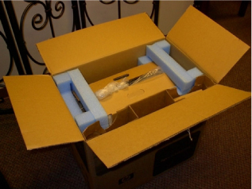
First remove the pads.
Illustration 2: Removing the Pads
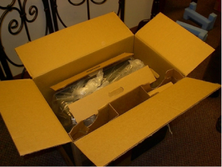
Then use the handles to pull the workstation out of the box.
Illustration 3: Using Handles
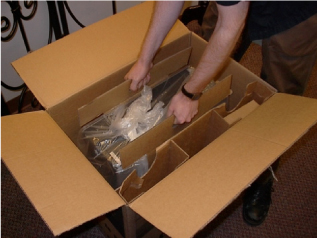
Pulling the workstation up.
Illustration 4: Pulling Workstation
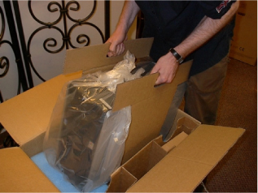
The workstation outside its shipping box.
Illustration 5: Workstation Outside of Box
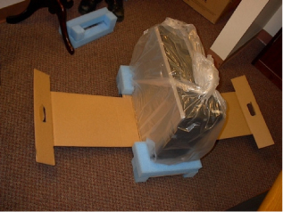
The workstation unwrapped.
Illustration 6: Unwrapped Workstation
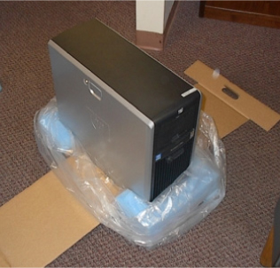
US Keyboard
Illustration 7: US Keyboard
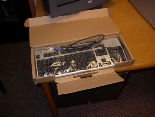
The back of the workstation before plugging in any cables.
Illustration 8: Back of Workstation
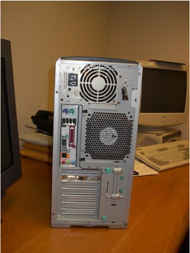
You can now connect all the cables:
Network cable
Keyboard
Mouse
Video cable from DVI-I connector #1 on workstation to DVI-I Input #1 on NEC screen
Power cable
USB Hardware key (if available).
| NOTE: | it is also possible to connect the workstation to a VGA screen (Illustration 9). In this case use the DVI-I to VGA adapter or the DVI-I to VGA cable, which are provided. |
The HP8000 workstation is equipped with a video card, which has 2 Dual DVI-I monitor outputs. A DVI-to-VGA adaptor may be required if a VGA screen is connected to the workstation.
Illustration 9: DVI-to-VGA Adaptor
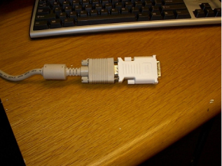
Connect the DVI-I to DVI-I Video cable to connector #1 on the workstation (the right connector, when looking at the workstation from the back, as shown in Illustration 10, and to the Input #1 of the NEC flat screen, as shown in Illustration 12.
This is a picture of the back of the workstation after all cables have been connected.
Illustration 10: Back of Workstation With Cables
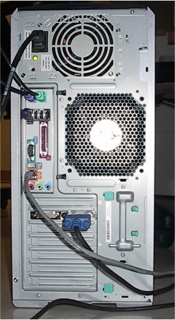
For sites in Asia, the power cord must be secure to the chassis. Use the provided Ty-wrap to secure the power cord. See Illustration 11.
Illustration 11: Securing Power Cord
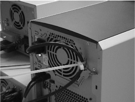
The back of the monitor. Note that the video cable is connected to Input #1.
Illustration 12: Back of Monitor
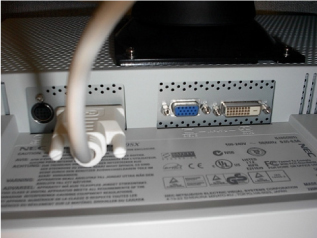
Turn on the workstation at this time. Because no software is loaded, the screen will look as in Illustration 13. This is what will show up on the screen before any operating system has been loaded. The workstation is shipped with no installed software.
Illustration 13: Initial Workstation Screen
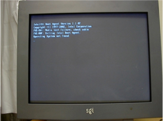
Insert the Operating System installation CD-ROM in the CD-ROM drive, close the CD-ROM door, and power-cycle the workstation with the CD-ROM in the drive.
Insert the Linux GEMS CTT installation CDROM in the optical drive.
| NOTE: | All installation scripts assume that the CDROM drive is wired as the primary IDE bus position. In this position disks in that drive will mount as /mnt/cdrom. It is also possible to install a second CDROM drive in secondary IDE position. Disks in this drive will mount as /mnt/cdrom1. This is not supported. |
Power up the workstation with the CTT CDROM in the drive. The system should detect and boot from the CD.
The CTT Linux 2.1.4 distribution installation screen appears.
Illustration 14: CTT Installation Screen
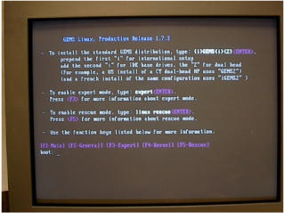
At the prompt type: “GEMS” (without the quotes) for a US-based customer, iGEMS for an international installation.
Dual head (i.e. dual monitor system): ReportCARD 2.0 does not currently support this option.
IDE base drives: The workstation is equipped with SCSI drives. The install will fail with an exception if you choose this option. ReportCARD 2.0 does not currently support this option.
| NOTE: | Installing the OS with this installer will erase all contents on the drives in the workstation. |
The CTT Linux installation lasts about 10 minutes. At the end, if the installation is successful, you are presented with an OK screen (Illustration 15).
Illustration 15: Successful Installation Screen
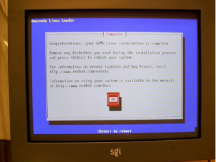
Press the <Return> key to continue.
The CD is automatically ejected as the system reboots. Remove the CD now. You can store the CTT CD away. The CTT Linux installation is complete. Go to Network Setup for the Network setup
| NOTE: | Linux starts up and automatically logs into the root account. No password is required this time. |
| NOTE: | It takes about 1 min 10 sec for the system to boot up. |
| NOTE: | The default login for the default root account is: “install” (without the quotes). |
| NOTE: | The first time the system boots up, the system boots up directly into the root account (See Illustration 16) without requesting a password. Even if you do not do anything, and you reboot, the second time the system boots up the system will ask you for a password for the root account (password is “install” at this time, NOT the root password “operator”). |
This is the default Linux start-up screen after installing the MR Linux OS from the Linux CTT 2.1.4 CD.
Illustration 16: Default Linux Start-up Screen
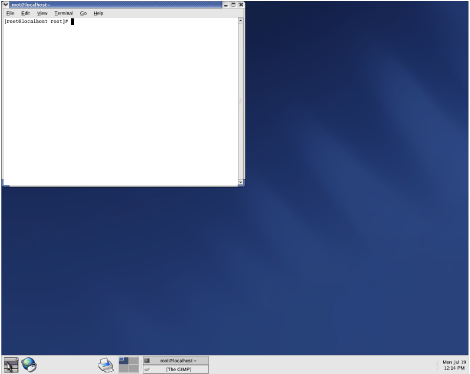
The Linux OS is installed by default with networking inactive. Networking has to be setup and made active.
First select the Network Configuration application (Illustration 17) from the bottom panel. The Network Configuration application can be found under System Settings/Network.
Illustration 17: Network Configuration Application
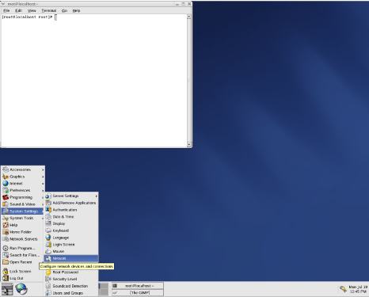
Depending on the configuration, one or more network devices can be present. In most cases only one is present (Illustration 18). The device will be labeled as “Inactive.” This is the Devices tab of the Network Configuration setup utility. Note that the system detected an Ethernet card but did not enable it. Click on the eth0 Device row and click [Edit]
Illustration 18: Devices Tab
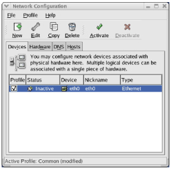
Click on [Edit] to change settings with the information provided by the site. A fixed IP is required for the workstation since connectivity to the scanner is required and this IP address will be entered in those other scanners.
The following information is required:
Fixed IP: _____._____._____._____ (For example: 192.168.4.112) Mask: _____._____._____._____ (For example: 255.255.255.0) Gateway: _____._____._____._____ (For example: 192.168.4.21) DNS1: _____._____._____._____ (For example: 151.202.0.85) DNS2: _____._____._____._____ (For example: 151.203.0.85)
This is the general tab of the Ethernet Device Edit setup wizard. The Edit screen was filled out with typical network information for a local network. Note that a fixed IP is required for ReportCARD 2.0 so that the DICOM push configuration from other systems can be setup permanently.
Illustration 19: General Tab
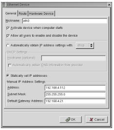
Enter the Network information for the device. Make sure you check the “Activate device when computer starts,” “Allow all users to enable and disable the device,” and “Statically set IP Address” options.
This is the Route tab of the Ethernet Device Edit setup wizard. There is no need to enter information in this tab.
Illustration 20: Route Tab
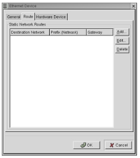
This is the Hardware Device tab of the Ethernet Device Edit setup wizard. There is no need to enter information in this tab. Select [OK].
Illustration 21: Hardware Device Tab
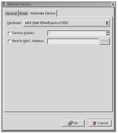
This is the Hardware tab of the Network Configuration setup utility. No changes are required on this tab.
Illustration 22: Hardware Tab
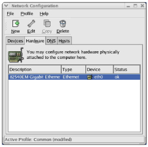
This is the Hosts tab of the Network Configuration setup utility. Click on [New] and enter the IP (Address) and Hostname.
Illustration 23: Hosts Tab
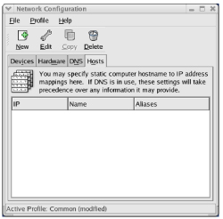
This is the DNS tab of the Network Configuration setup utility. Enter the DNS server information for the local network. The Tertiary DNS is optional.
Illustration 24: DNS Tab
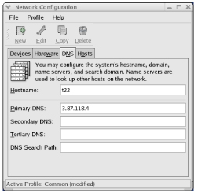
After entering the DNS information in the DNS screen tab (Illustration 24), return to the Devices Tab.
In the Devices tab click on [Activate]. A GUI appears informing you that changes were made to the configuration. Click on [Yes] to save changes. Another GUI appears informing you that network information is saved. Click on [OK] to continue. Go to Date/Time Setup for the Date/Time Setup.
You may now close the Network Configuration screen.
The Network Configuration Activate button is enabled and the Ethernet device is ready for activation after all settings have been entered.
Illustration 25: Enabled Activate Button
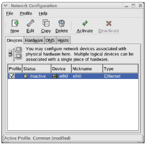
If the network activation is successful, the Ethernet device is labeled as being active.
Illustration 26: Successful Network Activation
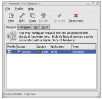
If the settings were entered as indicated above, no reboot will be required and networking should be fully functional. This functionality can be checked by opening a web browser. If settings are entered differently than described above, in particular if the hostname is changed, the following popup dialog may appear (Illustration 27). You should click on [Yes].
Illustration 27: Popup Dialog
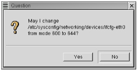
Note that immediately after you enable the network setting, a reboot of the workstation may be required. None of the window applications will work anymore: they will either crash or not start at all. For example The GIMP crashes and Mozilla cannot start at all. No error message is displayed.
If a reboot was required after setting the network, Login as root (password: install) to continue the setup. Note that the user interface may not start automatically: You need to start it up yourself by typing: “startx” (without the quotes) as shown in Illustration 28.
Illustration 28: Continue Setup After Reboot
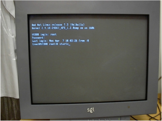
It is also possible to check that the network configuration was correctly setup by opening a shell window and typing the check network command: “ifconfig” (without the quotes) as shown in Illustration 29.
Illustration 29: Checking Network Configuration
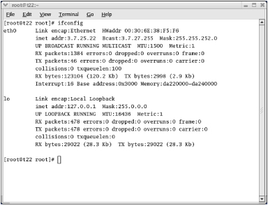
This section describes how to correctly setup the time, date, and time-zone for the system.
Open the Date & Time Properties setup application from the bottom panel. This application can be found under System Settings (Illustration 30).
Illustration 30: Date & Time Properties Setup Application
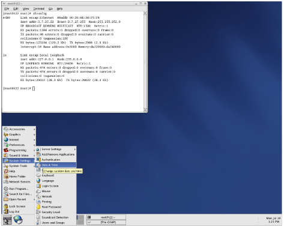
Set the correct time, date, and time zone in the Date & Time (Illustration 31) and Time Zone (Illustration 32) tabs, respectively.
Illustration 31: Date & Time
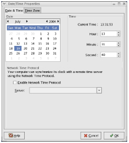
Illustration 32: Time Zone
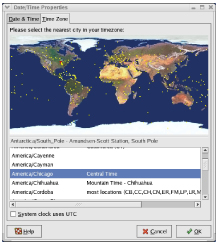
In the Date & Time tab, the panel states you can also use a network time protocol, but we have never seen it working (Illustration 33). By default the time zone is set to Chicago (Central Time).
Illustration 33: Network Time Protocol
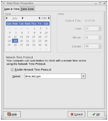
| NOTE: | Enabling the network time server is optional. Also, the network time server cannot function if the workstation is connecting to the Internet from behind a firewall. |
It is necessary to log out and back in to see the correct time in the bottom right panel. Proceed to ReportCARD 2.0 Installation for the ReportCARD 2.0 installation.
This procedure first indicates how to run the ReportCARD 2.0 Linux installation scripts, which create partitions on the workstation and create the adequate accounts and services. The procedure then describes the steps to run the ReportCARD 2.0 application installer.
You need to be logged in as root for the first part of this installation.
Put the ReportCARD 2.0 installation CDROM in the optical drive of the workstation. Wait about 15 seconds for the CD to be recognized by the system and mounted (a CD icon will appear on the desktop).
The CDROM is mounted as /mnt/cdrom in the file system.
Open a Terminal window, if such a window is not already open (a terminal window is a window with a white background, which looks like a Unix shell window). You can open a new Terminal window by right-clicking on the desktop and selecting [New Terminal].
In the Terminal window type the following command (Illustration 34): sh /mnt/cdrom/inst/start_install
Illustration 34: Installation Start-up
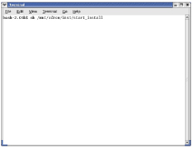
A message will appear in the terminal window: “Warning: Cannot convert string vlines2 to type Pixmap”. This message can be ignored
Also a GUI will appear saying Before continuing, verify that any connected DASM is not powered and that the Waveform Display is connected to the system and powered properly. This can be ignored, click on [Continue].
A list of options pops up (Illustration 35). Choose [Continue]. This will start formatting the workstation drives with the required partitions. This option will also automatically be chosen after ten seconds of inactivity.
Illustration 35: Options List
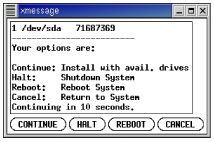
While partitioning the drives, a warning window is displayed (Illustration 36). Do not interact with the system at this time. The system will automatically reboot as root after all partitions have been created.
Illustration 36: Warning Window
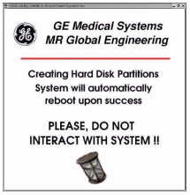
When the system reboots, the second part of the installation scripts will automatically be executed.
| NOTE: | The root password has just been changed: from now on the root password is “operator.” |
This completes the setup process under the root account, and the Linux partitioning and account creation. The installation CD will be ejected once the scripts are done running. Logout of the root account. Proceed to Starting the Linux ReportCARD 2.0 Installer to continue with the ReportCARD 2.0 installation.
| NOTE: | The steps in this section normally need to be run only once. They effectively erase all partitions that exist on the system, except for the Linux installation partition. |
This section describes how to install ReportCARD 2.0 on Linux for the first time. If ReportCARD 2.0 has already been installed once and this is an update, it is preferable to first uninstall the application (Uninstalling the application is described in Uninstalling ReportCARD 2.0).
You must log out of the root account and log into the sdc account to install ReportCARD 2.0.
First log out of the root account. To log out of an account you need to left-click on the desktop icon at the bottom left of the screen (Illustration 37) and select [Log out].
Illustration 37: Log Out Menu
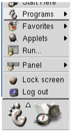
Once the log out process has completed and you are faced again with a login window, log into the delta account: type sdc (all lower-case letters) as the login name and adw2.0 as the password (the account and password are case-sensitive).
| NOTE: | The default password for the sdc account is adw2.0. |
After logging in wait for the Gnome graphical user interface to start. You should see a desktop environment similar to the one in Illustration 38.
Illustration 38: ReportCARD 2.0 Default Desktop
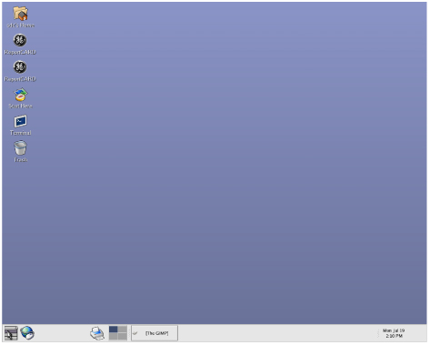
You may now insert the ReportCARD 2.0 installation CD back in the drive.
Wait about 15 seconds for the CDROM to mount. If you do not see the CDROM on your desktop, click on the [Start Here] icon located in the desktop. The CDROM window may automatically appear on the desktop.
The CDROM should now appear on your desktop (Illustration 39).
Illustration 39: ReportCARD 2.0 CD Icon
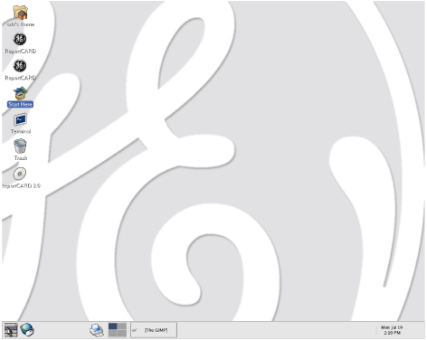
To set the desktop background, right-click on the desktop and select [Change Desktop Background]. A Background Preferences window will appear (Illustration 40). Click on [Select picture] (default.png). A window appears to select a file. In the “Selection” window type /mnt/cdrom/ge_background.jpg to get proper background.
Illustration 40: Background Preferences Window
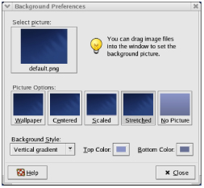
In the CD contents window (Illustration 41 ), double-click on [install.htm], which will start the web-based installer
Illustration 41: CD Contents Window
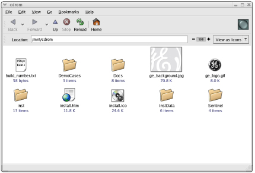
A Warning-Security message appears, asking you to trust the signed applet (Illustration 42). Select [Yes].
Illustration 42: Warning-Security Message
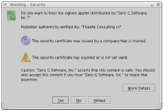
The install.htm file contents can be viewed in the Linux file browser.
Illustration 43: Viewing File Contents
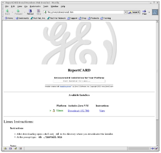
Click on [Start Installer for Linux]
ReportCARD 2.0 will begin downloading. You may now go to Linux/Windows ReportCARD 2.0 Installation.
The remainder of the installation is identical on all supported platforms, whether it is for product or for the free Reader. The snapshots below are for Red Hat Linux. You should always choose the default settings unless you have some very good reasons not to!
The ReportCARD 2.0 installer supports multiple languages. Choose your preferred language at startup. Click [OK].
Illustration 44: Preferred Language
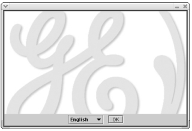
The introduction screen for the ReportCARD 2.0 installer. Select [Next].
Illustration 45: Introduction Screen
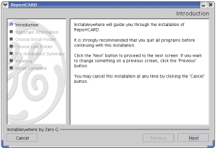
Snapshot of the information panel for the ReportCARD 2.0 installer. Select [Next].
Illustration 46: Information Panel
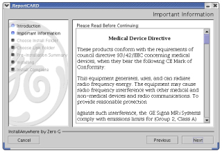
Snapshot of the “Choose Install Folder” window for the ReportCARD 2.0 installer. Select [Next].
Illustration 47: Choose Install Folder
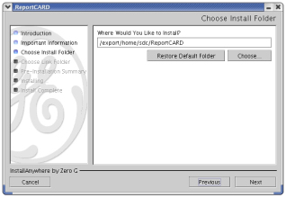
By default the software is installed in the home directory of the delta account, i.e. /export/home/sdc. A new folder is created called ReportCARD, which will contain all application files. The install folder indicates where the ReportCARD 2.0 applications file will be copied.
The “Choose Link Folder” window for the ReportCARD 2.0 installer. Select [Next].
Illustration 48: Choose Link Folder
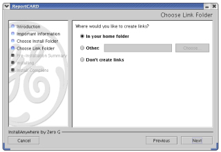
Before displaying the next screen, the installer checks whether there is enough space to install the software before proceeding. Illustration 49
Illustration 49: Pre-Installation Window
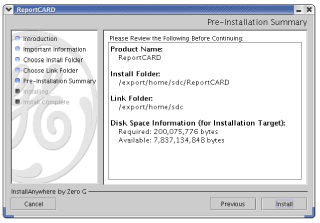
Press [Install] to start the installation.
Snapshot while installing ReportCARD 2.0 with the ReportCARD 2.0 installer.
Illustration 50: Installing ReportCARD
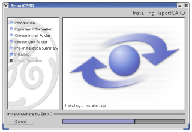
In the last screen (Illustration 51), click on [Done]. The installer GUI closes.
Illustration 51: Install Complete Screen
You are done with the software load. Go to Setting-up ReportCARD 2.0 to configure.
If this is the first time ReportCARD 2.0 is being installed on this system or the operating system has been reloaded, configuration is needed. If ReportCARD 2.0 is being upgraded from an earlier version, preferences will be preserved and it should not be required to re-enter these settings, unless instructed otherwise.
To run ReportCARD 2.0 in product mode, user must have a registration license.
From the Linux desktop double-click the [sdc’s Home] icon to display the contents of the sdc home directory (Figure 52).
Illustration 52: sdc's Home Directory
Double-click therunReportCARD shortcut script icon. This is the shortcut that was installed as part of the installation if you selected that option. If this shortcut does not exist, open the ReportCARD 2.0 folder in the sdc account home directory and find the ReportCARD 2.0 startup script. Double-click on that script.
| NOTE: | The following error message may be displayed when you double-click on the runReportCARD script icon (Illustration 53). Select the Run option. |
Illustration 53: Run or Display?

Fill out the Registration Information.
Illustration 54: Registration Window
Click [Next] to go to the next window - Database.
Illustration 55: Database Window
Verify that the database folders are correctly set: Database Files needs to be set to /export/home1/Database. Image Files needs to be set to /export/home1/Images.
| NOTE: | On the Linux platform, the Database Files is set to /export/home1/Database by default and the Image Files is set to /export/home1/Images by default. You should not have to set anything and the Database screen should already look like Illustration 55. Click [Next]. |
Click on [Set…] to set the paths for the Database and Image folders. These folders designate the locations where the database files and the DICOM images will be saved, respectively. It is strongly recommended that these folders be created outside the application folder because the data will likely need to be preserved, even if the application is upgraded, which could mean deleting the ReportCARD 2.0 application folder entirely.
Folders have been created by default as part of the installation process: /export/home1/Database and /export/home1/Images. We recommend that these folders be used.
After clicking [Next], the Step 3 of 5 window will appear - DICOM Server (Illustration 56).
Illustration 56: DICOM Server Window
Enter the desired AE Title, port for the ReportCARD 2.0 DICOM server. The default settings should be appropriate:
AE Title default: ReportCARD 2.0 Port default: 4006
| NOTE: | The AE-Title will correspond to the entry on the scanner. The
port cannot conflict with other processes, which may be using this port on
the system already. At startup, ReportCARD 2.0 detects if the port is already
being used. The ReportCARD 2.0 DICOM Server only runs when ReportCARD 2.0 is running. |
Click [Next] to go to Step 4 of 5 - DICOM Clients (Illustration 57).
Illustration 57: DICOM Clients Window
Optional: Enter the remote DICOM client node information for remote clients the user wants to access from ReportCARD 2.0. When finished, click [Next].
| NOTE: | This is not supported for the current release of ReportCARD 2.0. This information can be entered later through the ReportCARD 2.0 Preferences interface. |
Click [Next] to go to Step 5 of 5 - Users (Illustration 58).
Illustration 58: Users Window
Optional: Enter as many users as desired. Users can have identical names.
| NOTE: | This information can be entered later through the ReportCARD 2.0 Preferences interface. |
When finished, click on Finish.
This completes the ReportCARD 2.0 setup. ReportCARD 2.0 will now start. Proceed to the Optional Steps below.
ReportCARD 2.0 will now start. Further optional steps at this time include:
Restore Demo Cases from the ReportCARD 2.0 installation CDROM (Restoring Demo Cases).
Setting up a printer (Setting Up A Printer).
Checking that the CDROM burner is correctly configured (Checking the CDROM Burner Configuration).
Setup ReportCARD 2.0 as a Remote Host on the scanners and workstations, which will be pushing images to the ReportCARD 2.0 workstation (DICOM Server Setup on MR Scanner).
Three demo cases have been included on the ReportCARD 2.0 installation CD. They can be restored into the ReportCARD 2.0 database by selecting File->Browse DB (or typing Ctrl-O) in the ReportCARD 2.0 application and clicking on [Restore].
First start the application and from the File menu, open the Database Browser (Figure).
Illustration 59: Database Browser
Click on [Restore] (Illustration 60) in the Browse Database window and navigate to the Demo Cases folder on the CDROM (“/mnt/cdrom/DemoCases”, Illustration 61 ). Reminder: the CDROM contents are mounted under /mnt/cdrom.
Illustration 60: Restore Demo Cases
Illustration 61: Demo Cases Folder
Select the demonstration case file you would like to restore to the application (for example backup_E01959.dlt) and click on [Select]. This will start the Restoring process. A progress bar appears. When the progress bar disappears and the case is listed in the database table, you can click on [Update View] to load the case in the Viewer or you can continue to restore more cases.
Illustration 62: Demo Case Successfully Restored to Viewer
Repeat the procedure for the remaining cases, if desired. Each case has to be restored one-by-one. Once you have restored all the cases, you can click on [Update View] in the bottom right corner of the Database Browser to verify that the cases have been correctly restored to the new database.
You may now unmount/eject the ReportCARD 2.0 application CDROM from the drive by going to the desktop, right-clicking on the CD icon, and selecting [Eject].
ReportCARD 2.0 produces high-quality color reports, which can be printed to a color printer, if a printer is configured correctly. The procedure that follows describes how to setup a local printer connected to the workstation through the parallel port of the workstation.
From the bottom panel of the screen, navigate to the Printer Configuration application. This application can be found under System Settings (Illustration 63).
Illustration 63: Printer Configuration
The Printer Configuration application requires you to be root to run. It will therefore ask you for the root password if you are not logged in as root. Enter the root password (operator) to continue (Illustration 64).
Illustration 64: Root Password
In the Printer Configuration setup window (“printconf-gui”) click on [New] to add a new printer (Illustration 65).
Illustration 65: Printer Configuration Application
A printer setup wizard will start. On Linux, adding a printer is equivalent to “Adding a new print queue” (Illustration 66). Click [Forward] and enter the name of the printer to set the “Queue Name” field. We will describe the procedure for adding a local printer (i.e. a printer connected to the workstation directly, either through the parallel port or through the USB port), or on the same network as the workstation.
Illustration 66: Adding a Printer
After entering the queue name, we set our Queue type as local (Illustration 67). Click [Forward].
Illustration 67: Queue Type
In our case the printer was automatically detected. Now select the correct driver for it based on the printer’s manufacturer and the printer’s model name.
Our printer is a Hewlett Packard Deskjet 932C, which happens to be listed in the list of available drivers. Among the drivers for that printer we selected “hpijs.” This driver happened to be the only one that seemed to work.
Click on [Apply] to complete the process. In the “printcon-gui” window (Illustration 68), click on [Apply] to save the changes. A test page can be printed from the Test menu.
Illustration 68: Print Configuration Window
You will need a printer network address:
Printer network address: _____._____._____._____
(For example: 192.168.4.99)
In our example case, instead of a Local Printer, we chose the queue type as Networked UNIX (LPD) (Illustration 69).
Illustration 69: Queue Type
Next, enter the network address of the printer and its queue (Illustration 69). We now have to select the correct driver for it. See Network Setup.
Our network printer is a Hewlett Packard 4100N. However, we simply selected the printer model to be a PostScript Printer (Illustration 70).
Illustration 70: Printer Model
Click on [Apply] to complete the process. In the “printcon-gui” window (Illustration 71), click on Apply to save the changes. A test page can be printed from the Test menu.
Illustration 71: Printer Configuration Wiindow
The information below is provided “just-in-case” and no setup should be required.
The ReportCARD 2.0 workstation is equipped with a CDROM burner. ReportCARD 2.0 supports burning referral CDROMs from the application. It is important that the application be configured correctly to detect the CD Burner.
The CD Configuration information is located in a properties file named configuration.properties located in the resources folder in the ReportCARD 2.0 application folder (Illustration 72). Double-click on the file and select to display its contents (Illustration 73).
Illustration 72: Location of the configuration.properties File
Illustration 73: Run or Display?
The file contains explanations for help in filling out the information. The contents of the file should already be correct for the standard configuration of the ReportCARD 2.0 Linux workstation.
To verify that the information is correct open a terminal window and, as root, type (Illustration 74): cdrecord -scanbus
Illustration 74: Output
Verify that the output for the CDROM writer on the system matches the contents of the file.
If a change is required, make the change, and launch ReportCARD 2.0. ReportCARD 2.0 will automatically import that information in its preferences and use it for launching the CD-Burner software.
| NOTE: | Only one CD-burner is supported at this time. |
The DICOM Server only runs when ReportCARD 2.0 is running.
On a GE Scanner setup a Network Client connection by following these steps. First select the Network from the Database Browser tab. Click on Selected Remote Host (Illustration 75).
Illustration 75: Network Client Connection
The Remote Host Selection window appears (Illustration 76). Click on [Add].
Illustration 76: Remote Host Selection Window
With the settings that were used in this installation procedure, the following information would need to be entered in the Remote Host Parameter window (Illustration 77):
Host name ReportCARD 2.0 Network address 192.168.4.112 Network protocol DICOM Port number 4006 AE Title ReportCARD 2.0 Comment Archive Node Auto Send Images? Yes Query/retrieve images? No Custom Search? Off
Illustration 77: Remote Host Parameters Screen
Click on [Save], then [OK].
Check the connection by pushing images from the scanner to ReportCARD 2.0. Again note that ReportCARD 2.0 needs to be running for the DICOM Server to be running and the connection to be successful.
The default CTT build has no services turned on by default. An FTP server may be required for supporting the workstation over a remote connection, for example from the scanner. Follow these steps to turn on FTP server services.
First select the Services setup utility in System Settings -> Server Settings (Illustration 78). Enter the root password.
Illustration 78: Selection of the Services Setup Utility
In the Services utility, select the checkmarks next to the CUPS, tftp, and telnet services (Illustration 79).
Illustration 79: Service Configuration Utility
Select the xinetd service and click on the [Restart] button.
You may want to share this information with the customer. Even if you are familiar with the terminology, it is highly unlikely that your customer will be. They will need to know this information to properly operate the software. Linux uses different terminology than Windows or Mac OS. On Linux, a CDROM is “mounted” as a “Volume”. To eject a CD, you need to “unmount” the volume. It can be done graphically with the mouse (Method 1) or through the Terminal window (Method 2) by typing text.
Method 1: Ejecting a CD with the Mouse
First, if you do not see the CDROM on your desktop, click on the [Start Here] icon on the desktop.
The CDROM should now appear on your desktop.
Right-click on the CDROM icon and select [Eject]. This will eject the CD if the CD was “mounted.” If this does not work try pressing the eject button on the CDROM drive. If this still does not work try the Terminal method described below.
Method 2: Terminal Window
Open a Terminal window and type the command: Su root followed by the root password (“operator” without the quotes). Then type (Illustration 80): umount /mnt/cdrom
This should eject any CDROM from the drive.
Illustration 80: Command Line Instruction for Ejecting a CDROM.
An uninstaller is included with ReportCARD 2.0. It is recommended to use it to easily uninstall the ReportCARD 2.0 application.
First, if you do not see the sdc’s Home on your desktop, click on the [Start Here].
The sdc’s Home icon should now appear on your desktop.
Double-click on the sdc’s Home icon. Open the ReportCARD 2.0 folder and, inside, open the Uninstall folder (Illustration 81).
Illustration 81: ReportCARD 2.0 Uninstaller
Double-click on the Uninstall_ReportCARD script to uninstall ReportCARD 2.0.
Select [Run] to run the ReportCARD 2.0 uninstaller script.
Illustration 82: Run or Display?
Click on [Uninstall] to fully uninstall the ReportCARD 2.0 application.
Illustration 83: Uninstaller Start Screen
ReportCARD 2.0 was successfully uninstalled.
Illustration 84: Successful Uninstallation
You are done with the software uninstall.
The Codonics printer (Horizon) needs a different queue for each type of paper. Therefore, if the customer plans on using different types of paper with Horizon, we suggest going through printer configuration several times, once for each type of paper, and naming the printer based on which kind of paper the setup is configured for.
The printer queues are displayed below:
| Paper/Film | Queue |
| A4 ChromaVista Paper | 2.a4-cvp |
| A ChromaVista Paper | 2.a-cvp |
| 14x17 DirectVista Clear Film | 2.14x17-dvfc |
| 14x17 DirectVista GrayScale Paper | 2.14x17-dvp |
| A DirectVista Grayscale Paper | 2.a-dvp |
Please contact us for the printer queue if the customer has a type of paper not listed in the table above.
No finalization steps.